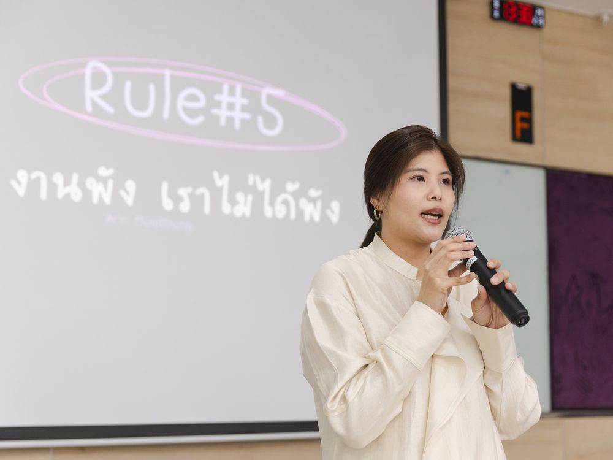
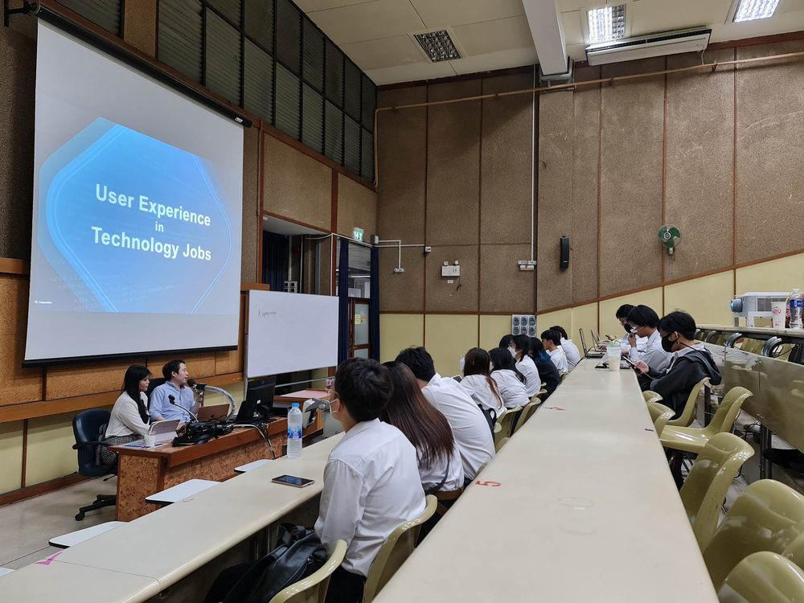

Arin Muadthongอรินจ์ หมวดทอง
อรินจ์ หมวดทองArin Muadthong
Speaker · Educator · Product & Systems Thinkerวิทยากร · ผู้สอน · Product & Systems Thinker
Making complex work clearer.
Turning ideas into practical next steps.เปลี่ยน
เปลี่ยน
About Arinเกี่ยวกับ Arin
Arin brings nearly 15 years of experience in IT consulting, business analysis, and product development across consulting, banking, and startup environments. Her background includes IBM Consulting, PwC SEA Consulting, and Krungsri Nimble, alongside hands-on experience co-founding a business and building digital products.
Through speaking, teaching, and content creation, she turns lessons from real work into accessible ideas and practical questions. Her sessions help people understand the context behind problems, explore possibilities, and make more informed decisions about their work and what they want to create next.
Arin มีประสบการณ์เกือบ 15 ปีในงาน IT Consulting, Business Analysis และการพัฒนาโปรดักต์ ทั้งในบริษัทที่ปรึกษา ธนาคาร และสตาร์ทอัพ เคยร่วมงานกับ IBM Consulting, PwC SEA Consulting และ Krungsri Nimble รวมถึงมีประสบการณ์ร่วมก่อตั้งธุรกิจและสร้างโปรดักต์ดิจิทัลด้วยตัวเอง
Arin ถ่ายทอดบทเรียนจากการทำงานจริงผ่านการบรรยาย การสอน และการสร้างคอนเทนต์ ให้กลายเป็นแนวคิดที่เข้าใจง่าย และคำถามที่นำไปใช้ได้จริง เซสชันของ Arin ช่วยให้ผู้ฟังเข้าใจบริบทเบื้องหลังปัญหา มองเห็นความเป็นไปได้ใหม่ ๆ และตัดสินใจเรื่องงานรวมถึงสิ่งที่อยากสร้างต่อไปได้อย่างรอบด้านมากขึ้น
Speaking & Training Topicsหัวข้อบรรยายและอบรม
Drawing on experience across consulting, product development, and teaching, Arin explores how people understand work, solve problems, and turn ideas into action. The topics below offer starting points for a session tailored to your audience and event goals.
จากประสบการณ์ทั้งงานที่ปรึกษา การพัฒนาโปรดักต์ และการสอน Arin ชวนผู้ฟังสำรวจว่าเราเข้าใจงาน แก้ปัญหา และเปลี่ยนไอเดียให้เป็นการลงมือทำได้อย่างไร หัวข้อด้านล่างเป็นจุดเริ่มต้นที่ปรับให้เหมาะกับผู้ฟังและเป้าหมายของงานได้
-
Design Thinking Understanding People, Framing Problemsเข้าใจคน ตั้งโจทย์ให้ถูก
Understand real needs, challenge assumptions and test possible solutions.เข้าใจความต้องการที่แท้จริง ตั้งคำถามกับสมมติฐาน และทดสอบทางออกที่เป็นไปได้
Takeawayสิ่งที่ได้รับA clearer problem and a prototype to test.โจทย์ที่ชัดเจนขึ้น พร้อมต้นแบบ (prototype) สำหรับทดสอบ
-
Agile Experimentation Making Progress Under Uncertaintyเดินหน้าได้แม้ในความไม่แน่นอน
Prioritize, work in small steps and adapt through feedback.จัดลำดับความสำคัญ ทำทีละก้าวเล็ก ๆ และปรับตัวจาก feedback
Takeawayสิ่งที่ได้รับA short-cycle plan and clear review points.แผนงานแบบรอบสั้น พร้อมจุดทบทวนที่ชัดเจน
-
AI as an Enabler Designing Better Workflowsออกแบบ workflow ให้ดีขึ้น
Identify where AI can help, define human roles and check results.หาจุดที่ AI ช่วยได้ กำหนดบทบาทของคน และตรวจสอบผลลัพธ์
Takeawayสิ่งที่ได้รับA practical workflow for a real task.Workflow ที่ใช้ได้จริงกับงานจริง
Formats & Audiencesรูปแบบและกลุ่มผู้ฟัง
Arin combines stories from real projects with clear explanations, reflection prompts, and discussion. Sessions can be adapted to the audience’s experience, the context of their work, and the purpose of the event.
Arin ผสมผสานเรื่องเล่าจากโปรเจกต์จริงเข้ากับคำอธิบายที่ชัดเจน คำถามชวนคิด และการพูดคุยแลกเปลี่ยน โดยปรับเนื้อหาให้เหมาะกับประสบการณ์ของผู้ฟัง บริบทการทำงาน และวัตถุประสงค์ของงาน
-
Talks & Q&Aบรรยายและถาม-ตอบ
Accessible talks that connect real experiences with practical ideas, followed by space for questions and discussion.การบรรยายที่เข้าใจง่าย เชื่อมประสบการณ์จริงเข้ากับแนวคิดที่ใช้ได้จริง พร้อมช่วงถาม-ตอบและพูดคุย
-
Panel Discussionsเสวนา (Panel Discussion)
Perspectives from consulting, product development, and teaching to support conversations about work, people, and technology.มุมมองจากงานที่ปรึกษา การพัฒนาโปรดักต์ และการสอน เพื่อร่วมพูดคุยเรื่องงาน คน และเทคโนโลยี
-
Small Group Workshopsเวิร์กช็อปกลุ่มเล็ก
Guided reflection and case-based activities that help participants examine a question and identify practical next steps.กิจกรรมชวนคิดและกรณีศึกษา ที่ช่วยให้ผู้เข้าร่วมสำรวจคำถามและหาก้าวต่อไปที่ทำได้จริง
Who the sessions are forเหมาะสำหรับใคร
Employees and teams navigating complex work, people collaborating across functions, HR and L&D teams designing learning opportunities, and university students preparing to enter the workplace.พนักงานและทีมที่ต้องรับมือกับงานซับซ้อน คนที่ทำงานร่วมกันข้ามฝ่าย ทีม HR และ L&D ที่ออกแบบการเรียนรู้ในองค์กร และนักศึกษาที่กำลังเตรียมตัวเข้าสู่โลกการทำงาน
Experience behind the learningประสบการณ์ด้านการสอน
Arin’s teaching and facilitation experience includes university guest sessions, corporate and project workshops, and online courses published on SkillLane and Udemy.ประสบการณ์การสอนและ facilitation ของ Arin ครอบคลุมการบรรยายรับเชิญในมหาวิทยาลัย เวิร์กช็อปในองค์กรและโปรเจกต์ และคอร์สออนไลน์บน SkillLane และ Udemy
Arin in Actionตัวอย่างผลงาน
Get a feel for Arin’s sessions through highlights from her YouTube channel, nobuglife by Arin MW, and campus visits.
เพื่อให้เข้าใจแนวทางการสื่อสารของ Arin มากขึ้น ลองดูคลิปไฮไลต์จากช่อง YouTube nobuglife by Arin MW และภาพจากการบรรยายที่มหาวิทยาลัยต่างๆ
Video Highlightsวิดีโอไฮไลต์
Campus Visitsบรรยายในมหาวิทยาลัย
-

King Mongkut’s Institute of Technology LadkrabangDebug Your Career Before It Debugs You: ชีวิตการทำงานที่ไม่มีสอนในตำรา · February 2026สถาบันเทคโนโลยีพระจอมเกล้าเจ้าคุณทหารลาดกระบังDebug Your Career Before It Debugs You: ชีวิตการทำงานที่ไม่มีสอนในตำรา · กุมภาพันธ์ 2569 -
King Mongkut’s Institute of Technology LadkrabangWith students after the session · February 2026สถาบันเทคโนโลยีพระจอมเกล้าเจ้าคุณทหารลาดกระบังถ่ายรูปร่วมกับนักศึกษาหลังจบการบรรยาย · กุมภาพันธ์ 2569
-

Chulalongkorn UniversityDesign Thinking Workshop for students · April 2023จุฬาลงกรณ์มหาวิทยาลัยDesign Thinking Workshop สำหรับนักศึกษา · เมษายน 2566 -
Chandrakasem Rajabhat Universityชีวิตการทำงานที่ไม่มีสอนในตำรา · Online session · March 2026มหาวิทยาลัยราชภัฏจันทรเกษมชีวิตการทำงานที่ไม่มีสอนในตำรา · บรรยายออนไลน์ · มีนาคม 2569
Professional Profileโปรไฟล์และประสบการณ์
The courses, work experience, and certifications behind Arin’s sessions.
คอร์ส ประสบการณ์การทำงาน และใบรับรองที่อยู่เบื้องหลังการบรรยายของ Arin
Courses & Learning Resourcesคอร์สออนไลน์ที่วางขายแล้ว
- Decode Work ทำงานเก่งในแบบคุณเอง Skilllane · ThaiSkilllane · ภาษาไทย
- Business Analyst Essentials เริ่มต้นสู่สาย BA & PO ด้วยทักษะที่ใช้ได้จริง Skilllane · ThaiSkilllane · ภาษาไทย
- Practical User Stories for Real IT Projects From backlog basics to clear user stories and professional sign-offตั้งแต่พื้นฐาน backlog จนถึง user story ที่ชัดเจนและการ sign-off อย่างมืออาชีพ Udemy · EnglishUdemy · ภาษาอังกฤษ
Work Experienceประสบการณ์การทำงานที่ผ่านมา
Background as a Senior IT Consultant, business analyst, and product owner across consulting, banking, and startups.
ประสบการณ์ในฐานะ Senior IT Consultant, Business Analyst และ Product Owner ทั้งในบริษัทที่ปรึกษา ธนาคาร และสตาร์ทอัพ
-
April – September 2025เมษายน – กันยายน 2568
IBMDT — IT Product Owner & Senior Founding Business Analyst
Established Business Analysis standards for multiple product teams under the IBM Garage framework
-
April 2024 – March 2025เมษายน 2567 – มีนาคม 2568
Krungsri Nimble — Innovation Product Owner
Defined strategy and roadmap for an AI-driven internal platform, from concept through pilot rollout
-
January 2022 – March 2024มกราคม 2565 – มีนาคม 2567
Absolute Consulting Co., Ltd. — Co-Founder & Product Leadผู้ร่วมก่อตั้งและ Product Lead
Co-founded a startup and built a mental health app from the ground up to launch, overseeing everything from user research to cross-functional teams
-
October – December 2021ตุลาคม – ธันวาคม 2564
PwC SEA Consulting — Managing Consultant & Workstream Lead
Led process design workshops for regional enterprise clients alongside international experts
-
July 2015 – October 2021กรกฎาคม 2558 – ตุลาคม 2564
IBM Consulting Thailand — Senior Consultant & Senior Business Analyst
Owned requirements gathering and design workshops for enterprise banking projects for over 6 years, while mentoring junior team members
-
November 2014 – May 2015พฤศจิกายน 2557 – พฤษภาคม 2558
IT-One — Associate Consultant
Supported analysis and development of the SAP Sales & Distribution module for domestic and international clients
-
September – December 2013กันยายน – ธันวาคม 2556
Roundarch Isobar (Boston, USA) — Software Quality Assurance Intern
Worked within an Agile development team, handling software quality assurance testing
Certificationsการรับรองและใบประกาศนียบัตร
Certified Professional Counselor and Career Coach, alongside IT and product credentials from IBM.
Certified Professional Counselor และ Career Coach พร้อมใบรับรองด้าน IT และโปรดักต์จาก IBM
IT & Productสาย IT & Product
- Product Owner CapstoneIBM · 2025
- Enterprise Design Thinking PractitionerIBM · 2025
- Banking Insights and SolutionsIBM · 2019
- Banking Industry JumpstartIBM · 2018
Counselingการให้คำปรึกษา (Counseling)
- Fundamental Counseling LeveliStrong · 2023
- Advanced Counseling LeveliStrong · 2023
- Professional Counseling LeveliStrong · 2023
Career Coach
- Career Coach CertificationIAP · 2026
Education:
Master’s degree: Information Systems, Northeastern University (🇺🇸 Boston, USA)
Bachelor’s degree: Computer Science, Chulalongkorn University (🇹🇭 GPA 3.35)
การศึกษา:
ปริญญาโท: Information Systems, Northeastern University (🇺🇸 Boston, USA)
ปริญญาตรี: Computer Science, จุฬาลงกรณ์มหาวิทยาลัย (🇹🇭 GPA 3.35)
Let’s Discuss Your Eventช่องทางการติดต่องาน
Looking for a session that helps your audience make sense of work, explore ideas, or see a familiar challenge from a different perspective?
Get in touch to discuss your audience, the purpose of the session, and a suitable topic and format.
ติดต่อมาเพื่อพูดคุยเรื่องกลุ่มผู้ฟัง วัตถุประสงค์ของงาน รวมถึงหัวข้อและรูปแบบที่เหมาะสมได้เลยค่ะ
or write to arin.arinmw@gmail.com
To help start the conversation, please share:เพื่อให้เริ่มคุยได้ง่ายขึ้น รบกวนแจ้งข้อมูลต่อไปนี้
- Your organization and intended audienceชื่อองค์กรและกลุ่มผู้ฟัง
- The purpose of the event or learning sessionวัตถุประสงค์ของงานหรือการเรียนรู้
- Your preferred topic or the challenge you want to exploreหัวข้อที่สนใจ หรือโจทย์ที่อยากสำรวจ
- The proposed date, location or online format, and session lengthวันที่ สถานที่หรือรูปแบบออนไลน์ และระยะเวลาที่ต้องการ